We generated the necessary fragments with overhangs for Gibson assembly. These fragments were employed to perform multiple Gibson assemblies with various molar excess ratios and vectors. We tried to verify our desired plasmid sequences through Sanger sequencing but failed to verify certain sequences. Especially the His4 gene sequence required for genome integration and selection of desired Pichia pastoris clones.
We tried Biobrick assemblies as well, but discontinued them due to the perceived low probability of obtaining positive colonies.
As another alternative to Gibson assembly, we tried linkage PCRs which did not produce the correct products.
From these results, we conclude that the cloning strategy must be changed. The assemblies with 3-4 fragments per assembly are inefficient and can be optimized by choosing a vector that already contains the His4 sequence.
Our first goal was to generate overhangs on our ordered fragments: Dextranase expression cassette fragment 1 (Dex1), Dextranase expression cassette fragment 2 (Dex2), Mutanase expression cassette (Mut), Dispersin B expression cassette (Dis), His4 and a part of plasmid BBF10K_000181 from the distribution kit (pBB).
The PCRs of pBB, Dex2, Mut and the His4 gene were successful without any further troubleshooting or modifications (Figures 1-3).
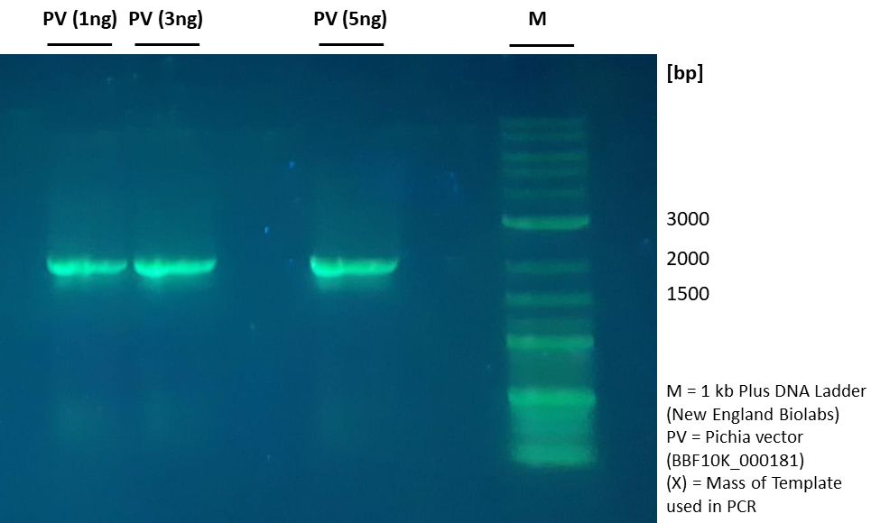
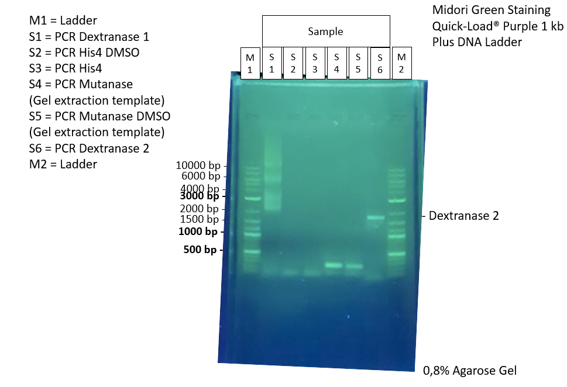
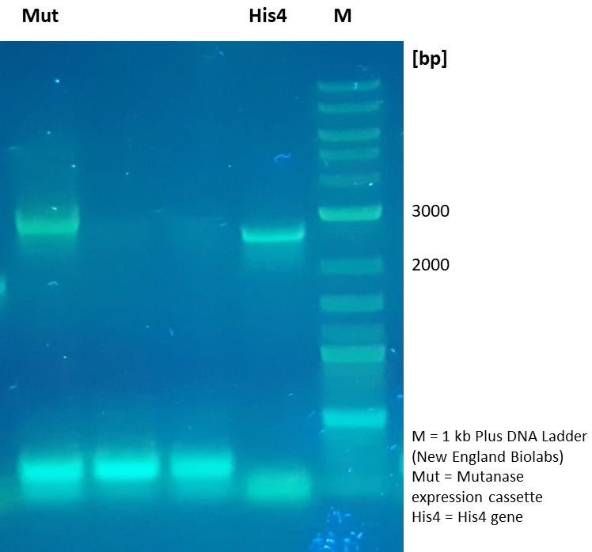
However, the following gel-extraction for Mut and His4 did not provide the needed yield and the PCRs needed to be repeated. For Mut, the repetition and pooled gel extraction, of several PCR samples, worked. For the His4 gene, the PCR did suddenly not work anymore under the initially successful conditions, and some further troubleshooting had to be done.
Different primer annealing temperatures, the addition of DMSO in various concentrations, GC-enhancer in different concentrations and more cycles as well as longer elongation times were tried. In addition, the integrity of our His4-template was also verified through a PCR with primers with the same annealing sequence but different overhangs. Eventually, new primers with a 3 bp longer annealing sequence were ordered, which resulted in the amplification of the correct product again (Figure 4).
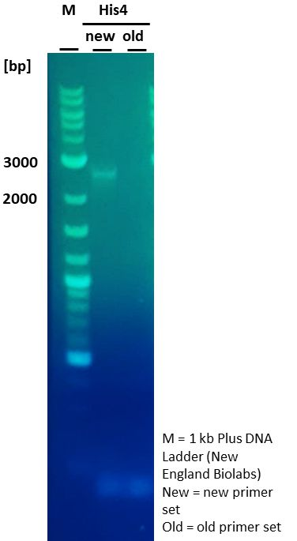
This time, PCR clean-up was performed instead of gel extraction and provided sufficient yields.
The PCRs for the Dex1 and Dis fragments were accomplished by exchanging forward and reverse primer of the Dis-PCR as well as the forward primer of the Dex1-PCR with Mut primers, which have a similar annealing sequence (Figures 5-6).
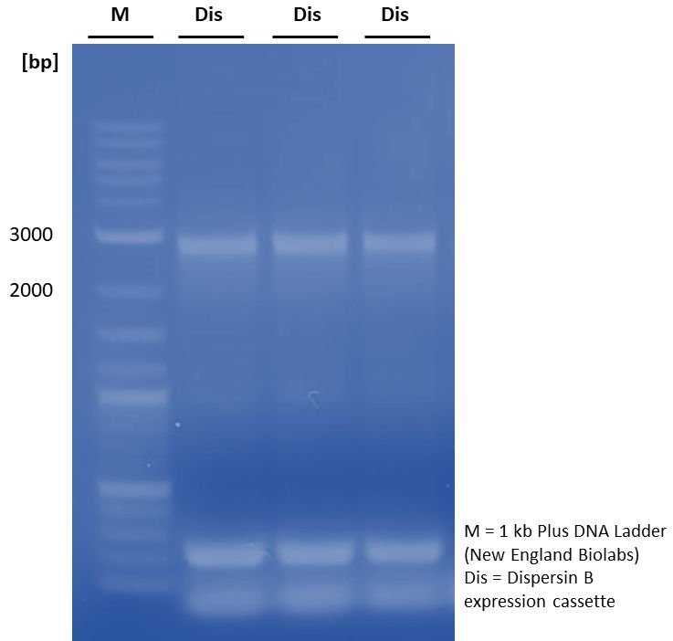
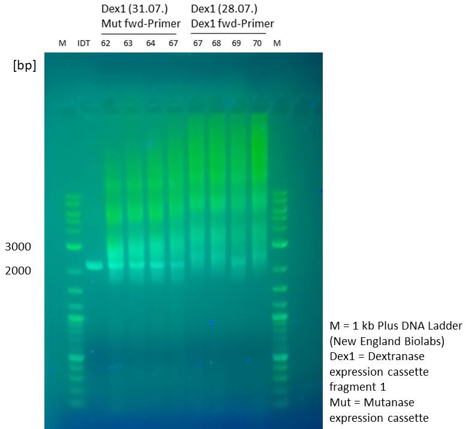
The generated fragments with overhangs should be assembled into three distinct plasmids, one for each enzyme, using Gibson assembly (Figure 7).
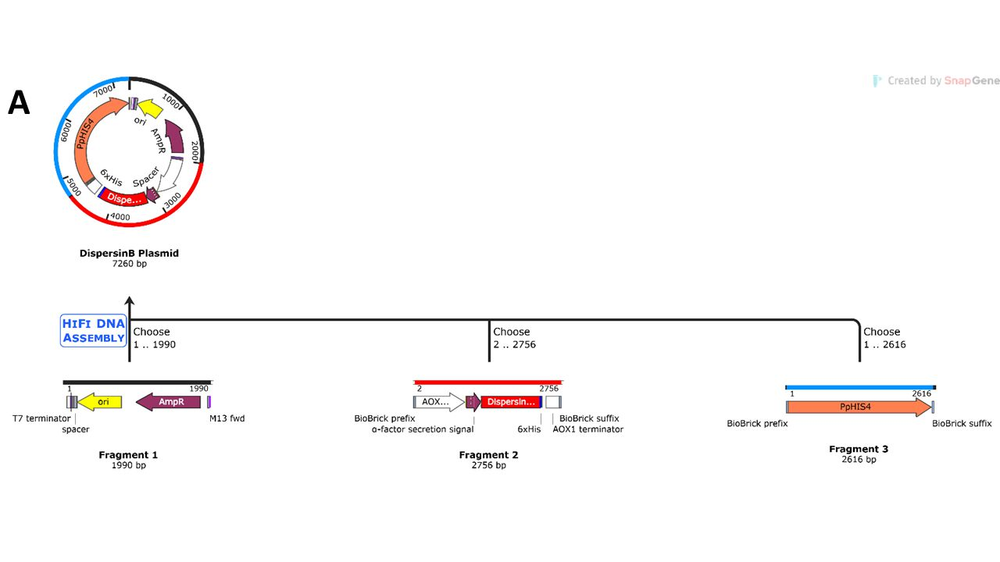
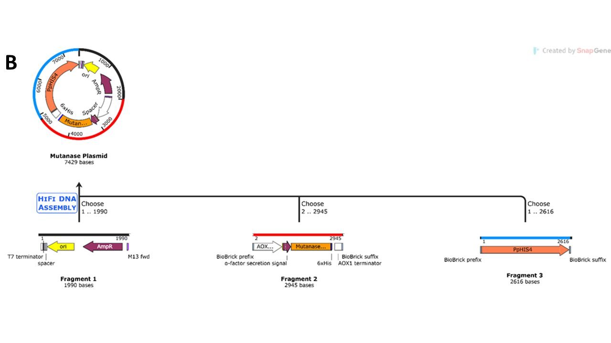
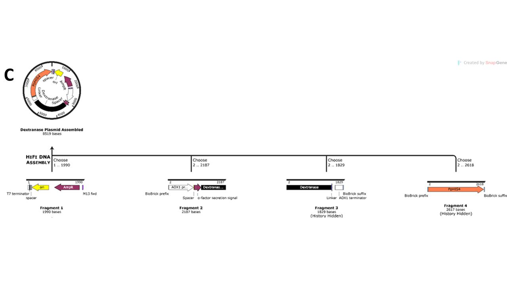
We carried out assemblies with different molar ratios which often produced colonies (Figure 8).
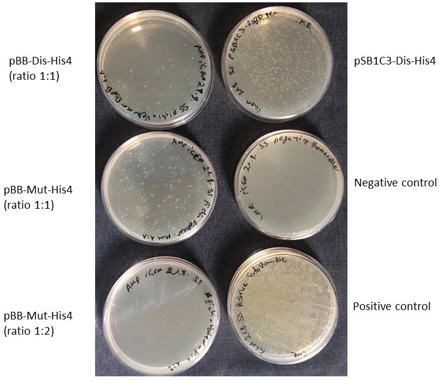
Figure 8 shows an exemplary outcome of a Gibson assembly experiment with subsequent transformation. It also demonstrates that in several instances a plasmid with ampicillin resistance was assembled in the Gibson assembly reactions.
These plasmids were investigated to find out if they contain all desired sequences as well as the correct sequences by colony PCR and Sanger sequencing. The colony PCRs rarely displayed bands with the expected size (Figure 9).
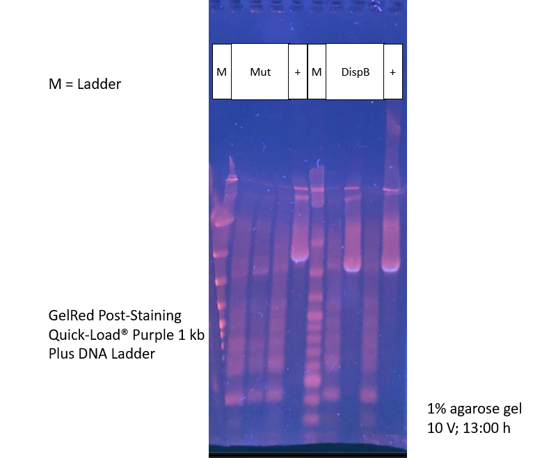
Figure 9 shows an exemplary colony PCR of Mut- and Dis-plasmids. Only one amplicon (Dis colony 5) displays the correct size. This colony also displayed the correct Dis sequence when sent to Sanger sequencing (Figure 10).
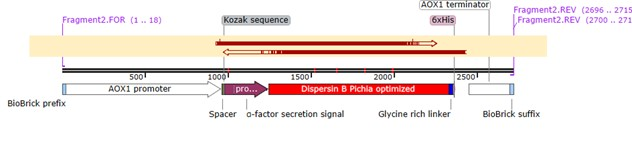
However, the His4 gene, important for the selection of positive clones and genome integration of the linearized plasmid in Pichia pastoris, could not be detected through Sanger sequencing. The absence of His4 in the plasmid was further validated through a restriction digest with SalI-HF that cleaves specifically at one site in the His4 gene.
As an alternative to Gibson assembly, linkage PCRs were performed. Linkage PCRs are PCR reactions where two DNA fragments with overlapping sequence overhangs can be linked together by using the forward primer of one DNA fragment and the reverse primer of the other DNA fragment.
A linkage PCR was, for example, carried out to link Dex1 and Dex2 together and reduce the four-fragment assembly to a three-fragment assembly. However, the agarose gel did not show a defined band at 3954 bp (Figure 11).
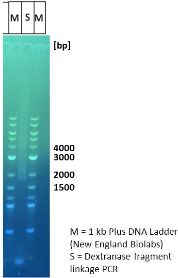
Biobrick assemblies were performed as well, especially to solve the problem of unsuccessful His4 overhang PCRs (see above) that we would have needed for a Gibson assembly. However, this was discontinued due to the perceived low probability of obtaining positive colonies and the eventual success of the His4 overhang PCR.
Moreover, we also transformed promising plasmids into our expression strain Pichia pastoris (Figure 12) and obtained colonies on selective minimal dextrose agar.
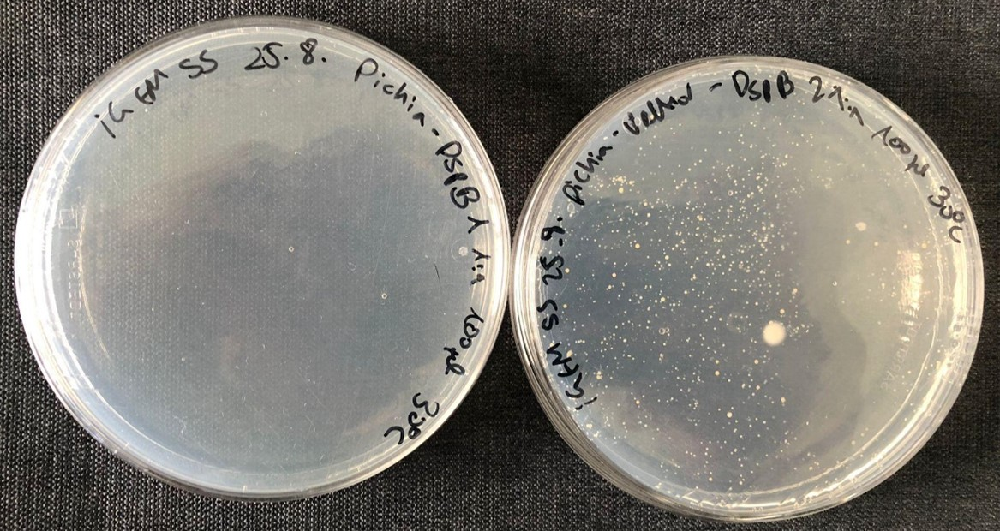
Unfortunately, sequencing did not verify that the sequence of the transformed plasmid was concordant to our desired sequence.
To clone our fragments into the pBAD18 empty vector, it was necessary to create Gibson overhangs on the fragments, which was achieved through PCR. After successful PCR, we conducted Gibson assembly at a vector-to-insert ratio of 1:2.
After cloning, we selected colonies and examined them using colony PCR, restriction digestion analysis, and Sanger sequencing to confirm that they carried the desired DNA construct. Cloning was successful. Subsequently, we transformed the desired DNA construct into L-arabinose-deficient E. coli strain BW25113 and induced expression.
Unfortunately, we encountered significant difficulties with expression and were unable to express our AMPs or AMP variants, as evident in the SDS-PAGE. Unfortunately, we did not have enough time to conduct further expression tests and determine when our products would be expressed.
From these experiences, we learned that we need to change our expression strategy. This includes positive control for expression, which also did not work (BW25113 E. coli strain with a plasmid construct expressing a protein previously expressed by a former graduate student).
To perform the Gibson assembly, we first had to generate fragments with specific overhangs. For this purpose, we conducted PCR with the AMP fragments and the 3'- and 5'-AMP overhang primers, as well as with the empty pBAD18 vector and the 3'- and 5'-pBAD18 overhang primers. Figure 13 shows the successful PCR results for AMP-0, and Figure 14 shows the successful PCR results for AMP-1 and AMP-2.
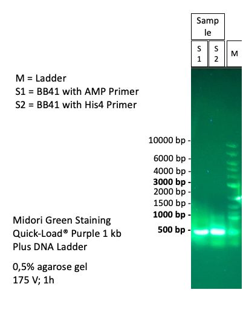
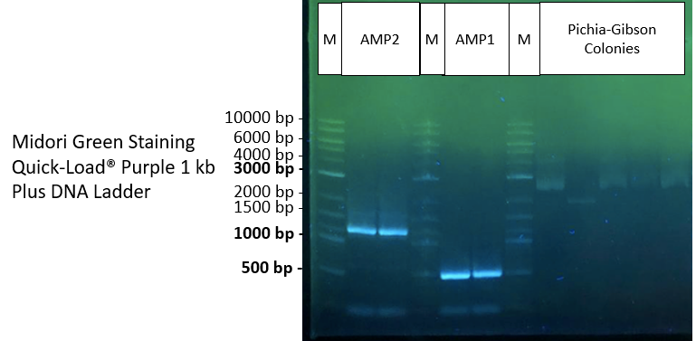
A volume of 10 µl of the PCR products was loaded onto the gel, and the rest was used for PCR purification. We consistently obtained 2-3 ng/µl PCR-DNA per 1 µl PCR product with almost always excellent A260/A280- and A260/A230-purity values.
After successful amplification, we proceeded with the cloning. For cloning, we chose the Gibson Assembly method, starting with a vector-to-insert ratio of 1:2, as shown in Table 1, listing the required DNA concentrations for the various constructs. The transformation was successful, and numerous colonies were observed on ampicillin-containing plates.
Gibson Assembly with NEBuilder for AMP-0, AMP-1, AMP-2 in pBAD18
| Sample | Amount for Gibson [ng] | Volume Sample [µl] | Water | NEBuilder |
|---|---|---|---|---|
| AMP0 | 18.77 | x0 | 10-x0 | 10 |
| AMP1 | 19.63 | x1 | 10-x1 | 10 |
| AMP2 | 45.47 | x2 | 10-x2 | 10 |
| pBAD18 Vektor | 75 | 0.80 |
From these colonies, we examined some using colony PCR with NaOH, and the presumably correct clones were submitted for sequencing. As seen in Figures 16 and 17, the cloning was successful for AMP-0, AMP-1, and AMP-2.
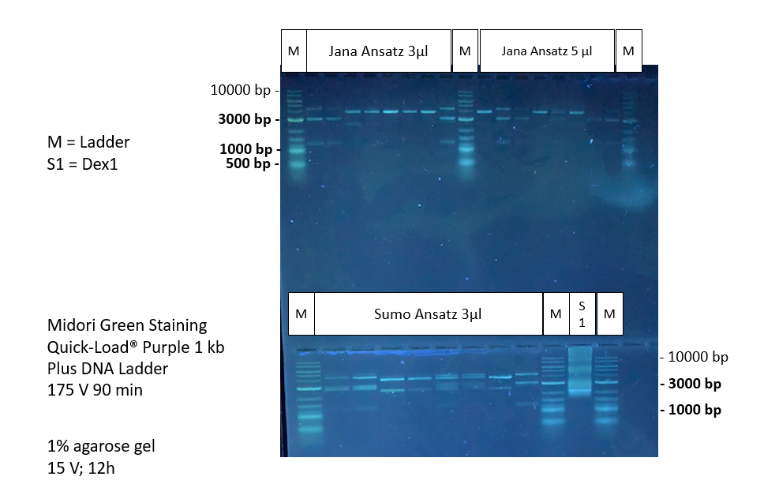
Figure 16: Restriction digestion analysis of pBAD18-AMP-0 plasmids. Two approaches with two different NEBuilder versions were used, one marked with Jana and the other with Sumo. The gel was stained with MIDORIGreen advance DNA stain (NIPPON Genetics). M = 1 kb Plus DNA ladder (New England Biolabs).
As seen in Figure 16, there are several samples with the correct band patterns. Considering the numerous samples with correct band patterns, two samples were submitted for Sanger sequencing, and their results are shown in Figure 17.
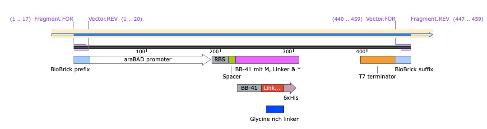
As seen in Figure 17, the cloning of AMP-0 into pBAD18 was successful.
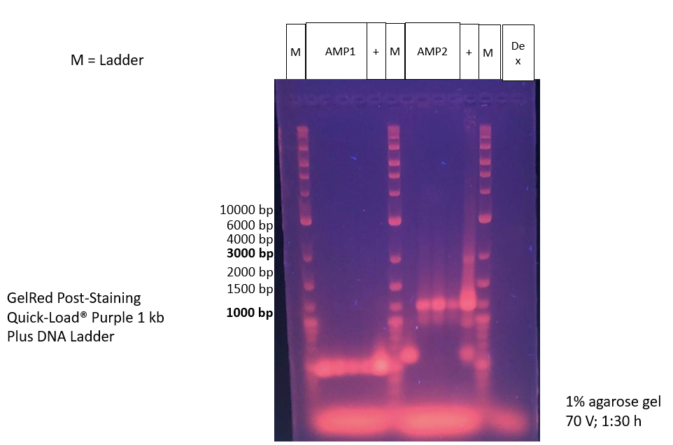
As shown in Figure 18, almost all colonies on the AMP2 Gibson Assembly LB plates exhibited the desired construct, and the same was observed for the AMP1 plate. However, due to the similarity in size between the plasmid region removed by PCR and the AMP-1 fragment, it was difficult to directly determine the success of cloning for AMP1 from the gel. Three samples per AMP were sent for Sanger sequencing, confirming successful cloning. The results of the Sanger sequencing are presented in Figure 19.
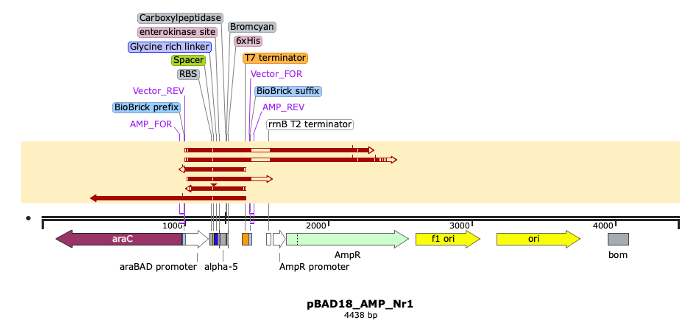
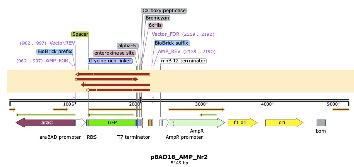
Figure 19: (A) Sanger sequencing of the AMP-1 sequence with forward and reverse primers. The red area indicates the alignment of sequencing bases with the desired sequence. (B) Sanger sequencing of the AMP-2 sequence with forward and reverse primers. The red area shows the alignment of sequencing bases calls with the desired sequence.
For the AMP-1 samples, it appears that all examined colonies carry the desired construct. The same applies to the AMP-2 samples. In one colony of the AMP-2 samples, however, we identified a mutation in our GFP open frame, leading to the exclusion of this colony from subsequent experiments.
After successful cloning, we transformed and expressed two colonies of each construct in the BW25113 strains.
During expression, our cells grew well with the constructs, as shown in Figure 20.
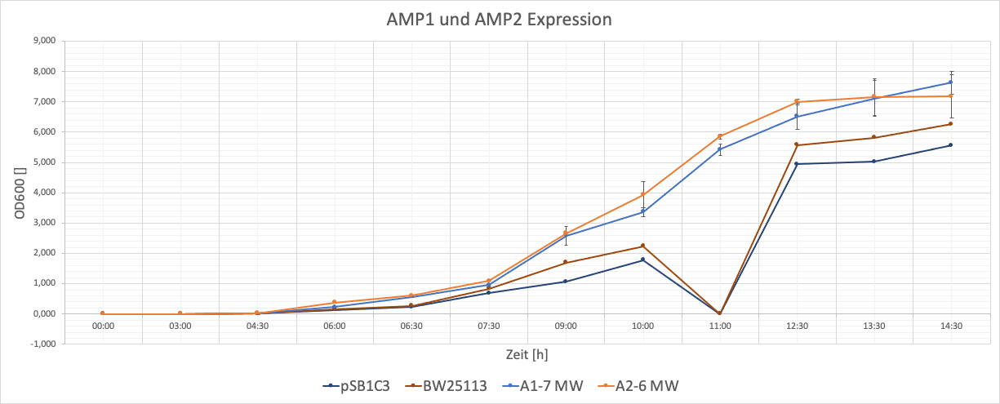
Fluorescence was also measured during expression. Unfortunately, the values remained constant throughout the experiment, leading us to believe that this expression was not successful. Therefore, another expression experiment was conducted with BW25113, BW25113-AMP-2, and BW25113-pSB1C3-GFP, using different L-arabinose concentrations to induce the cells. In this experiment, only fluorescence was measured, and the values are listed in Table 2. This experiment also investigated whether the use of E. coli strain BW25113 resulted in a difference in expression compared to stable NEB cells.
Table: Fluorescence values of the various expressed cells with different L-arabinose concentrations. B stands for BW25113; N for NEB Stable; 1 for 0.02% L-arabinose; 2 for 0.5% L-arabinose; 3 for 1% L-arabinose; 4 for 1.5% L-arabinose; 5 for 2% L-arabinose.
As shown in Table 2, the fluorescence value of the wild-type BW25113 remained unchanged. In the GFP positive control, the value increased at the end and showed a 27-fold change after normalization, both in BW25113-pSB1C3-GFP cells and NEB-stable-pSB1C3-GFP cells. In contrast, the other samples, after normalization, showed about a 2.5-fold change compared to BW25113 wild-type in the BW25113 samples and about a 3.5-fold change in the stable NEB samples.
As we obtained such minor fold changes, we attempted to examine the expression of GFP, AMP-0, AMP-1, and AMP-2 by SDS-PAGE. The results of the SDS-PAGE are shown in Figure 21.
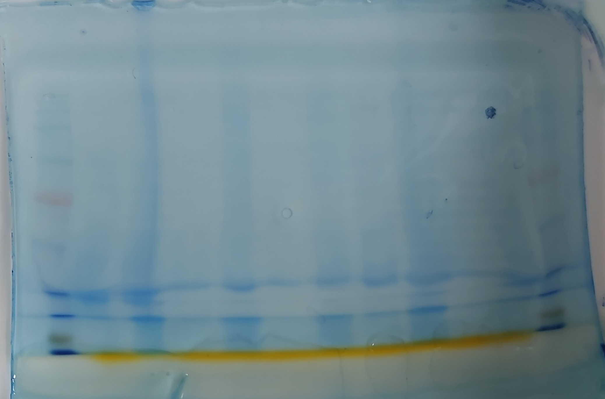
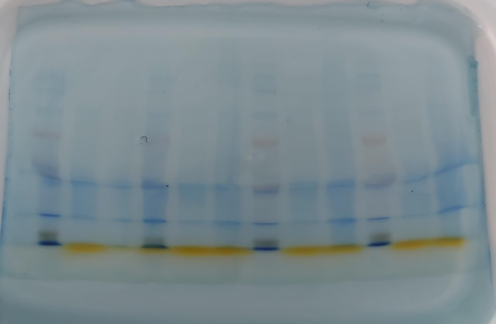
As seen in Figure 21(A) and Figure 21(B), neither overexpression was observed in the samples nor in the positive control. The positive control consists of BW25113 cells that received a pBAD18 plasmid successfully expressed by a former doctoral student at the Institute of Technical Biochemistry, University of Stuttgart.
Therefore, we believe that our expression protocol or approach could be incorrect, leading to the lack of expression. Unfortunately, we do not have the time to investigate this further and conduct additional expression experiments.
We attempted to synthesize monolaurin (glycerol monolaurate) through a condensation reaction of lauric acid and glycerol catalysed by Candida antarctica lipase B. Due to the incompatibility of our analytical method with the experimental design, the experiment had to be stopped.
We conclude that the experimental design and the analytical method need to be made compatible. For instance, by finding a way to measure the decrease of lauric acid instead of glycerol or detecting monolaurin, for instance, via high-pressure liquid chromatography (HPLC).
The synthesis of monolaurin was attempted by reverting the hydrolysis reaction that the Candida antarctica lipase B (CALB) and other lipases usually catalyse. We wanted to realize this by performing the reaction, without any water, in the non-polar solvent n-hexane, as it has been done before in literature [1]. Sadly, we were not able to perform our analytical method of choice, an HPLC, due to time limitations and safety concerns. Therefore, we searched for alternatives and thought we could utilize an enzymatic assay that measures glycerol concentrations through an enzymatic cascade that produces NADH. The absorption of NADH can be measured at 340 nm and thereby calculated back to the glycerol concentration. By measuring the decrease of the substrate, we wanted to show that the reaction had taken place as well as classify the product yield in terms of size.
Unfortunately, we did not think about the issue of glycerol insolubility in our solvent n-hexane. Thus, we observed the formation of insoluble complexes of glycerol and CALB (Figure 22).
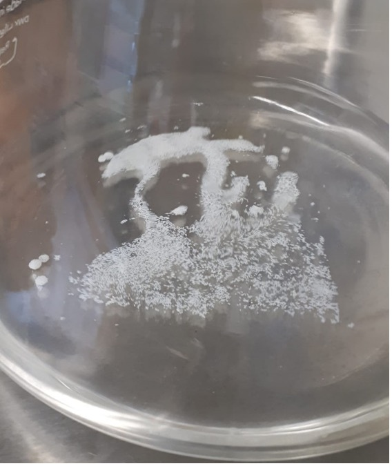
Moreover, the measured initial absorptions of NADH at 340 nm resulted in a negative glycerol concentration (Table 1).
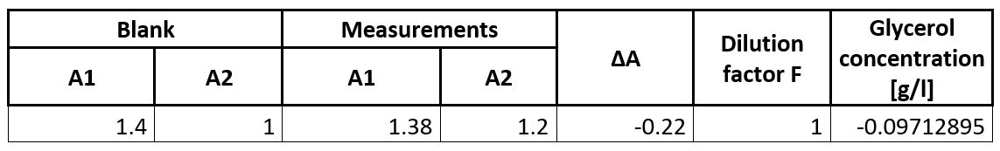
Regarding the enzyme section of our project, it would probably be reasonable to start from the beginning with a more efficient cloning strategy. If the new cloning strategy were successful, we would be able to continue with the expression and purification as well as the proof-of-concept part of the project.
Regarding the monolaurin section of the project, the experiment could be repeated when access to an HPLC or gas chromatography (GC) device is provided and monolaurin can then be detected through a chromatographic method. The solution could be utilized for proof-of-concept experiments.
[1] Pereira, C.C.B., da Silva, M.A.P. & Langone, M.A.P. Enzymatic synthesis of monolaurin. Appl Biochem Biotechnol 114, 433–445 (2004). https://doi.org/10.1385/ABAB:114:1-3:433
© 2023 - Content on this site is licensed under a Creative Commons Attribution 4.0 International license.
The repository used to create this website is available at gitlab.igem.org/2023/stuttgart.